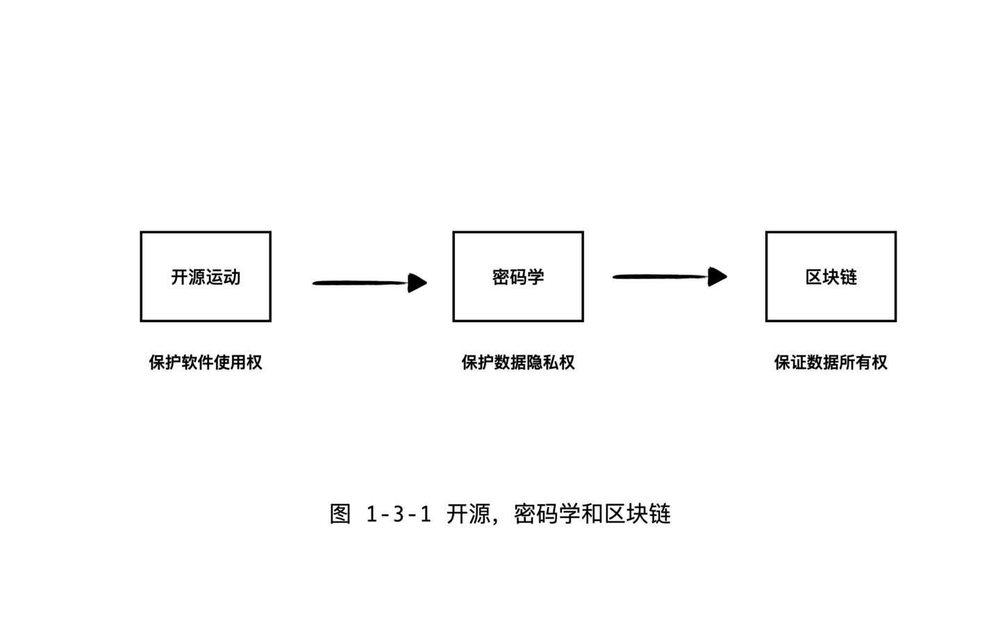

跟硬件一样，最近几十年，个人能够自由使用的软件也出现了爆炸式的增长。从某种意义来讲，开源软件运动就是软件去中心化的过程，打破了商业软件公司对软件的垄断，让个体都可以自由的去使用软件。没有这种自由，就没有全球范围的人与人之间的信任与合作，互联网也就不会诞生。互联网出现后，密码朋克运动和区块链的热潮，是开源运动的进一步深入，是赋能个体的民权运动。
版权软件
根据自由软件运动之父理查德·斯托曼回忆，计算机产业早期，软件都是开源和免费的。但是后来为何以微软为代表的商业软件公司售卖版权软件的模式成为了主流了呢？
1976 年比尔盖茨发表了《致电脑爱好者的公开信》，表达了对爱好者们使用他们的软件而不付费的抱怨，盖茨的思想是：谁愿意白干！没有对软件的版权保护和付费机制，软件产业的发展就会受阻。事实证明，很多人是认可他的观点的。这就是为何，当个人计算机在最初流行的时代，基本上主流的软件都是需要付费的版权软件。
版权促进了软件作为一种商品的大量生产，但是也同时阻碍了其作为一种知识的广泛传播。因为版权软件通常都是闭源的，用户拿不到源代码，即使拿到了源代码，用户也没有权力去基于版权代码去做改进，开发自己的软件。后来开源运动兴起，软件会按照各种开源软件协议发布，例如 GPL 或者 BSD 等等，这些协议都是用来专门保护用户对代码的自由使用权的，而不是软件公司的商业利益。
开源软件和互联网的崛起
互联网是一个去中心化的网络，之所以分布在全球陌生人之间能够合作，是因为大家都知道游戏规则是透明而公平的，开源软件就是游戏规则的载体。
开源，不仅意味着源代码开放，同时也意味着任何拿到代码的人，都可以有相当的自由去支配代码。我在自己的机器上安装了你的软件，那么肯定不希望你可以在未来以侵权的名义来取消我对这个软件的使用权的。当然，不同的开源软件协议之间也有一定的区别，例如 GPL 协议要求，如果我基于 GPL 协议的代码做了自己的修改，那么修改的部分也要按照 GPL 协议开源发布，或者说，GPL 是一种带有病毒性的协议。明显可以看出这种病毒性是为了尽可能的保证个人对软件代码的持有权。但是这样的协议显然对商业公司不太友好，因为公司还是希望修改后的版本能够闭源，来获得竞争上的优势，对应的有一些其他的开源协议，例如 MIT 协议，规定就更为宽松，没有 GPL 的那种病毒性，可以满足商业公司的这种需求。
开源不仅仅是一种软件开发方式，也是一种社会协作方式。Linux 操作系统是最知名的开源项目，也许没有之一。Linux 是一个价值百亿美金的软件，但是 Linux 之父 Linus 并没有花钱雇佣开发者去开发 Linux 系统。开发过程，是由来自全球的志愿者组成的松散的团队来完成的。Linux 的成功给了人们非常美好的信念，因为 Linux 项目跟特定的某个公司的利益也不绑定，但是却开发出来世界上最大而且最优秀的软件之一。从 Linux 项目可以看出，封闭化控制，不仅仅不利于全球范围的人和人之间的协作，同时也并不是生产卓越软件产品的必要前提。这一点对 Web3.0 是有非常大的启发的，作为支撑个人崛起的新一代互联网，Web3.0 也需要有大量的优秀且不被某个公司所独有的软件。
开源带来了互联网的崛起。世界上绝大多数的互联网服务器，都采用了 Linux 作为操作系统。因为，Linux 不仅仅免费，而且有开源的授权许可，可以任意的安装和自定制，而不必担心侵权。
区块链是开源的下一步
可以这么说，售卖软件拷贝的时代已经过去了，目前互联网巨头们都大量的使用开源软件，Gitbub 网站上可以拿到数以百万计的开源项目代码。从某种意义上说，开源运动已经取得了胜利。但是，互联网为何还是垄断日益严重，变得越来越不自由呢？答案是，虽然软件去中心化了，但是数据的所有权并没有去中心化。
大型互联网公司就是通过持有用户的数据来进行盈利的。谷歌和 Facebook 这样的公司，给大家提供的软件都是免费的，但是它们持有了大量的数据，通过广告和其他的大数据业务就可以赚到钱。但是伴随而来的烦恼就是数据隐私泄露的问题越来越严重。
数据隐私问题带来了人们对密码学的高度关注，密码学保证了个人可以保证自己的数据，无论是在存储过程中还是在通信过程中都不会被泄露。密码学最早几乎全部被国家垄断，密码学民用化的标志性事件是 PGP 之父菲尔·齐默尔曼发起了密码学圣战。密码学圣战发生在上世纪 90 年代，在那之前，密码学被认为是军火，安全级别较高的密码是不允许被商用和出口的。1991 年，菲尔·齐默尔曼开发了 PGP ，其中用到了久负盛名的公钥加密算法 RSA。PGP 是最早的一款广泛使用的公钥密码学的软件。菲尔·齐默尔曼把这个软件的源码上传到了美国国内的互联网服务器上。注意，RSA 是 128 位的强加密，属于《武器出口限制法案》的管制范围，服务器虽然在美国，但是互联网是没有国界的，很快 PGP 就在其他国家出现了。于是，菲尔·齐默尔曼涉嫌违反《武器出口限制法案》，从 1993 年开始接受调查。到 1996 年，克林顿总统终于意识到，如果不放宽密码学的出口限制，国际电子商务根本没办法开展了，所以签署法案，把密码学从军火列表移到了商业列表。从此，密码学的使用权去中心化了。
区块链技术就诞生在密码学社区。用户要真正拥有自己的数据，只是能够通过密码学安全的隐藏自己的数据是不够的。因为数据就是信息时代的石油，是生产资料，是需要拿出来用的。用户要真正持有，并且有效使用自己的数据，是需要很多其他技术的支撑的，例如去中心化的 ID 等，而这些都是跟区块链密不可分的。这是本书的重点内容，后面会陆续展开。

密码学普及是开源运动的一个部分，而区块链是开源运动的下一步。这个是很容易找到证据的。自由软件基金会是开源运动发起的地方，而它的创始成员之一 John Gilmore ，同时也是密码朋克社区的创始人。密码朋克社区是密码学最核心的社区组织，比特币就是诞生在密码朋克社区。同时可以看到在很多开源大牛的个人网站上，都会公布自己的 PGP 密钥，证明开源社区和密码学社区是非常关系紧密的。而最安全的密码学软件，也一定是开源软件。
结论
个人要在数字时代获得自由，不仅仅要有硬件的去中心化，而且要有软件甚至数据的去中心化。开源运动是软件使用权去中心化的过程，密码学圣战保护了数据隐私权，诞生在密码学社区的区块链技术会让个体真正的持有自己的数据，带来数据所有权的去中心化。每一次去中心化的过程，都是个人享有的数字能力的大幅度提升，Web3.0 在这个背景下，呼之欲出。